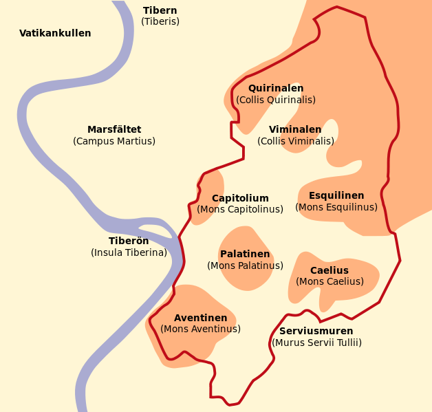
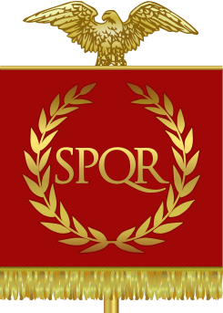
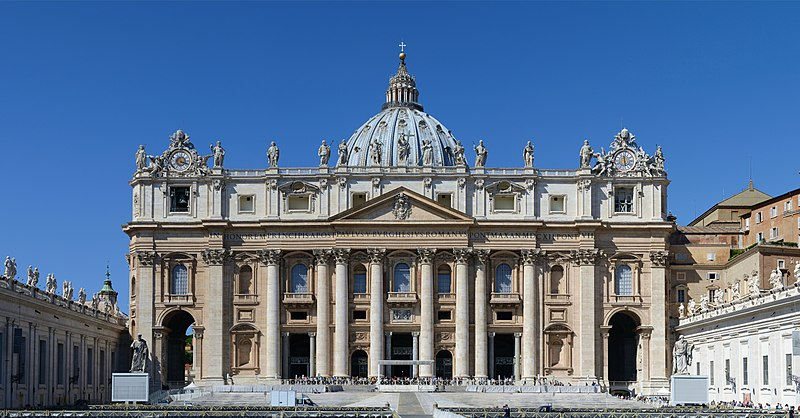

Roms kungatid
Roms kungatid varade enligt traditionen år 753–509 f.Kr. Under denna tid var Rom en av många stadsstater i området. Enligt legenden grundades staden Rom den 21 april 753 f.Kr. av Romulus, den ene av de två bröderna Romulus och Remus, söner till krigsguden Mars,[4] vilka hade blivit uppfödda av en varginna och sedan vuxit upp hos herden Faustulus.[5] De två bröderna ska ha debatterat var Rom skulle ligga och till slut skulle Romulus ha mördat Remus och döpt staden efter sig själv. Romulus ska sedan ha etablerat en senat och försvarat staden från grannar. Legenden menade att framställa starka, och livskraftiga romare som nedkomna från gudarna.[4] Romerska historiker ska sedan ha fortsatt berättelsen med en rad etruskiska kungar efter Romulus. Enligt dessa ska det etruskiska väldet ha tagit slut år 509 f.Kr. De flesta historiker tror idag inte på att etruskerna ska ha regerat i Rom men däremot att etruskerna hade ett stort inflytande. Etruskerna hade ett alfabet som Roms invånare antog, under etruskernas inflytande byggdes väggarna runt Rom och avloppssystemet tillkom.[4] Enligt traditionen började Romulus, den första av Roms kungar, sin regeringstid år 753 f.Kr. Regentlängderna som romerska historiker har presenterat är dock ifrågasatta av moderna historiker som bland annat finner att varje kung regerat i ungefär 30 år vilket måste anses ansenligt mycket för tiden. Man kan jämföra med få moderna regenter som regerat såpass länge. De romerska historikerna är oense om årtalen och det är svårt att koppla kungarna till arkeologiska bevis. Därmed måste uppgifterna om Roms tidiga kungar anses otillförlitliga.[6] Däremot är historiker överens om att kungaväldet existerade i verkligheten då många literära verk nämner kungarna och det finns historiska bevis för väldet i övriga Italien.[7] Enligt traditionen hamnade den ännu oansenliga bosättningen omkr. 650 f.Kr. under etruskiskt välde och omslöts enligt etruskisk sed av ett "pomerium", en obebodd gränszon, och uppkallades efter den etruskiska ätten Rumina. En annan teori är att ordet härleds från det etruskiska ordet för flod, rumon, och ytterligare en att ätten istället kallades gens Romilii eller gens Romana. Ungefär hundra år senare ska Rom ha erövrats av tarquinerna, men förblivit latinsk vad gällde språk och rättsordning.[källa behövs] Runt 600- och 700-tal pekar arkeologiska bevis på att staden ska ha fått en rad olika byggnader. Användningen av terrakotta och tegelpannor var utbredd och visar på att produktionen blev alltmer specialiserad. Det första huset med tegelpannor på taket har hittats på Sacra Via och är daterat till åren 650-625 f.Kr. En byggnadsfas mellan åren 590-580 f.Kr. ledde till flera mer sofistikerade takbyggen på offentliga byggnader. Curia Hostilia och kungaresidenset Regia byggdes under den här tiden. En tillströmning av grekiska emigranter kan ha bidragit till att romerska verkstäder ofta producerade arkitektur med grekiska influenser.[8]
Romerska kejsardömet
Rom var huvudstad i det romerska kejsardömet. År 395 delades riket i Västrom och Östrom, och Rom förblev det västromerska rikets huvudstad. Romarriket var från början bara en stadsstat men utvecklades till ett av världshistoriens mäktigaste imperier. Även efter att riket blivit ett kejsardöme skulle det bestå i cirka 400 år som enat rike (nästan 1500 år om man räknar med det Bysantinska rikets historia) och mycket skulle förändras i imperiet under tiden fram till Västroms fall 476 e.Kr. Tidernas första kejsare var Augustus som utnämnde sig själv till kejsare efter den tid av inbördeskrig som Caesars död skapade. Augustus var Caesars adoptivson och när Augustus kom till makten utnämnde han sig själv som kejsare som en hyllning till mannen som uppfostrade honom. Augustus satte stopp för inbördeskrigen och därefter kom en tid av fred som höll i cirka 400 år. För att hålla arméerna sysselsatta beordrade han dem att bygga murar runtomkring riket. Det romerska kejsardömet brukar sägas ha uppstått med det styrelseskick som följde slaget vid Actium 31 f.Kr.. Den romerska republikens institutioner i Rom hade dock förstörts under det föregående seklet, och Rom hade i praktiken styrts av en despot sedan Sulla.
Senantiken
Rom blev ett centrum för den framväxande kristendomen redan under det första århundradet e.Kr. och fick sin betydelse för kristendomen genom att de båda apostlarna Petrus och Paulus enligt en fast kyrklig tradition hade blivit avrättade och begravda här. Trots förföljelser växte den romerska församlingen snabbt och torde på 200-talet ha överstigit 10 000 personer. Efter Konstantin den stores seger vid Ponte Milvio norr om Rom 312 e.Kr., började han omedelbart att framhäva den kristna kyrkan också i den yttre arkitekturen. Det område som kallades Lateranen i södra Rom överläts till biskopen som där lät uppföra den ännu existerande Lateranbasilikan (San Giovanni in Laterano), som är kristenhetens äldsta kyrka. Vid Vatikanska kullen lät Konstantin bygga Petersbasilikan över aposteln Petrus' utpekade grav och inledde även bygget av en motsvarande Paulusbasilika (San Paolo fuori le Mura) vid Via Ostiensis ("vägen till Ostia"). Sedan Konstantin flyttat sitt kejserliga residens från Rom till Konstantinopel 330, och riket delats i Västrom och Östrom 395 minskade Roms betydelse som "världens medelpunkt". Visigoternas plundring av Rom 410 blev ett hårt slag för dem som ansett Rom oövervinneligt, och 476 avsattes den siste västromerske kejsaren Romulus Augustulus av germanen Odovakar. Genom bristen på enhetlig politisk ledning i det forna Västrom fick påven i stället en allt större betydelse som samlande kraft, särskilt sedan Rom blivit huvudstad i den nya Kyrkostaten 756. Ekonomiskt och socialt innebar den följande tiden en nedgång för staden som drabbades av saracenernas upprepade angrepp och av normandernas skövling 1084. Under dessa århundraden besöktes Rom av pilgrimer från hela Europa, vilket bevarade stadens internationella profil, och en rad laterankoncilier ägde rum.
